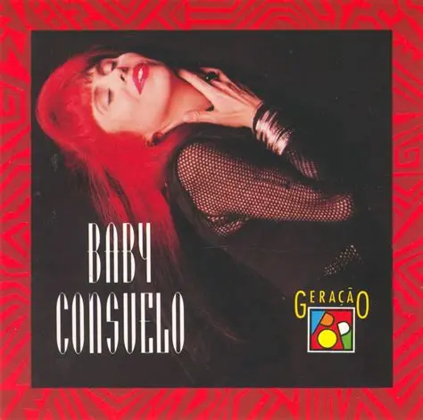

cor do dia
o
8 DIAS
Recomendação do Dia
Menino do Rio

Composta por Caetano Veloso e interpretada por Baby do Brasil tem uma atmosfera eloquente
Top Artistas
- TWICE
- PinkFloyd
- Angela Ro Ro
Top Albuns
- Simples Carinho
- Wish You Were Here
- Eyes Wide Open
Top Musicas
- Brasil Pandeiro
- What is Love?
- Mares da Espanha